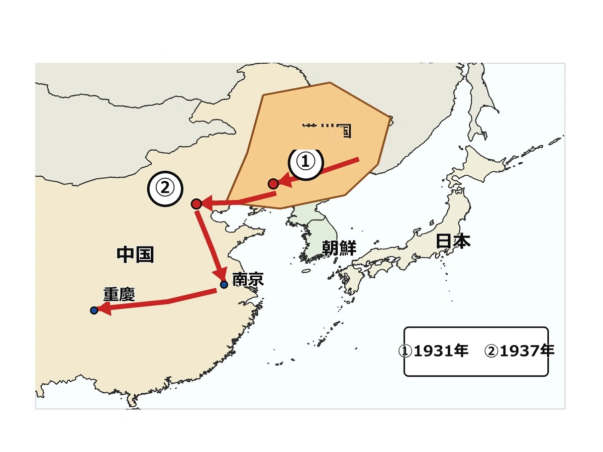

歴史 ⑮ 問題集 Web版
昭和の危機
世界恐慌 〜 日中戦争
 いっしょに がんばろう！
いっしょに がんばろう！タブか下のリストから選んで、1問ずつ解いていこう！
要点まとめ → 一問一答 → 4択 → 記述の順で力がつくよ。
要点まとめ → 一問一答 → 4択 → 記述の順で力がつくよ。
年
年表でチェック
（ ）をタップすると答えが出るよ。まずは自分で言ってから確かめよう！
| 年代 | できごと |
|---|---|
| 1929年 | ニューヨーク株式市場の大暴落をきっかけにがアメリカから始まる |
| 1930年 | 金解禁の直後に世界恐慌が重なり、日本でが起こる |
| 1931年 | 関東軍がを起こし、が始まる |
| 1932年 | 占領した中国東北部にが建国され、溥儀が元首となる |
| 1932年 | 海軍青年将校らが犬養毅首相を暗殺するが起こる |
| 1933年 | がドイツの首相となり、独裁体制を築き始める |
| 1933年 | リットン調査団の報告を受け、日本がを脱退する |
| 1936年 | 陸軍青年将校らがを起こし、軍の発言力が強まる |
| 1937年 | をきっかけにが始まる |
| 1937年 | 国民党と共産党がを結び、抗日で協力する |
| 1937年 | 日本軍が南京を占領する際に多数の市民を殺害するが起こる |
| 1938年 | 戦争のため国民や物資を動員できるが制定される |
| 1940年 | すべての政党が解散してが結成される |
| 1940年 | 日本・ドイツ・イタリアがを結ぶ |
1
世界恐慌とファシズムの台頭
A要点まとめ（ ）をタップして確かめよう
📖 先に参考書で理解する
1929年10月、ニューヨーク株式市場の大暴落をきっかけにが起こり、資本主義各国に広がった。アメリカでは1933年に就任した大統領が、公共事業で失業者を救うを進めた。イギリスやフランスは、本国と植民地で経済圏をつくり他国の商品を締め出すで危機を乗り切ろうとした。一方、個人より国家を優先する独裁体制であるが広がり、イタリアではが、ドイツでは1933年に政権を握ったが率いるが独裁を確立した。日本でも金解禁の直後に世界恐慌が重なるが起こり、生糸価格の暴落で農村が苦しんだ。
B一問一答1 / 11
1929年にアメリカから始まった世界的経済危機は？
世界恐慌
1929年10月24日「暗黒の木曜日」のニューヨーク株式市場の大暴落から始まり、資本主義各国に波及した世界的経済危機。
B一問一答2 / 11
世界恐慌が始まった年は？
1929年
1929年10月24日「暗黒の木曜日」にニューヨーク株価が大暴落し、これをきっかけに世界恐慌が世界中に広がった年。
B一問一答3 / 11
アメリカ大統領ローズベルトが行った恐慌対策は？
ニューディール政策
1933年からローズベルト大統領が進めた恐慌対策。ダム建設などの公共事業で失業者を救い、国が経済に深く関わった。
B一問一答4 / 11
ニューディール政策を行ったアメリカ大統領は？
フランクリン・ローズベルト
1933年に就任し、ニューディール政策で公共事業や農業調整法など国家介入による恐慌対策を進めた。第二次大戦時の大統領でもある。
B一問一答5 / 11
イギリス・フランスが本国と植民地で経済圏を作った政策は？
ブロック経済
本国と植民地で一つの経済の輪を作り、他国の商品には高い税をかけて排除し恐慌を乗り切ろうとした政策。
B一問一答6 / 11
個人より国家・民族を優先する独裁的政治体制は？
ファシズム
イタリアのファシスト党に由来する言葉。世界恐慌後、ドイツのナチ党や日本の軍国主義など各国の独裁的政治体制に広がった。
B一問一答7 / 11
イタリアでファシスト党を率いた独裁者は？
ムッソリーニ
1922年に「ローマ進軍」で政権を握り、ファシスト党による世界初のファシズム体制を作ったイタリアの独裁者。
B一問一答8 / 11
ドイツでナチ党（ナチス）を率いた独裁者は？
ヒトラー
1933年に首相となり、議会に頼らず法を作れる権限を得て独裁を確立。第一次大戦後の体制打破とユダヤ人迫害を進めた。
B一問一答9 / 11
ヒトラーが率いた政党は？
ナチス（ナチ党）
国家社会主義ドイツ労働者党の略称。1933年に政権を握ったヒトラーが率い、一党独裁体制でユダヤ人迫害などを行った。
B一問一答10 / 11
ヒトラーがドイツの政権を握った年は？
1933年
1933年はヒトラーがドイツ首相となり、日本も国際連盟を脱退した年で、世界が戦争への道を歩み始める転換点となった。
B一問一答11 / 11
1930年代初頭に日本を襲った経済危機は？
昭和恐慌
1930年に金と紙幣の交換を再開した直後に世界恐慌が重なって起きた経済危機。生糸価格の暴落で農村が苦しんだ。
C実戦問題1 / 8 正しいものを選ぼう
1929年にアメリカから始まった経済危機は？
C実戦問題2 / 8 正しいものを選ぼう
ニューディール政策を行ったアメリカ大統領は？
C実戦問題3 / 8 正しいものを選ぼう
イタリアでファシスト党を率いた独裁者は？
C実戦問題4 / 8 正しいものを選ぼう
イギリス・フランスが採った恐慌対策は？
C実戦問題5 / 8 正しいものを選ぼう
ヒトラーが政権を握ったのは？
C実戦問題6 / 8 正しいものを選ぼう
ナチスが行った人種差別政策は？
C実戦問題7 / 8 正しいものを選ぼう
ニューディール政策の特徴は？
C実戦問題8 / 8 正しいものを選ぼう
世界恐慌が始まった日「暗黒の木曜日」は？
D記述問題1 / 3 文章で説明しよう
アメリカでニューディール政策が行われた目的を、簡単に説明しなさい。
指定語句 失業者
D記述問題2 / 3 文章で説明しよう
イギリスやフランスが行ったブロック経済とはどのようなしくみか、説明しなさい。
指定語句 植民地関税
D記述問題3 / 3 文章で説明しよう
世界恐慌が重なって起きた昭和恐慌によって、日本の農村はどのような影響を受けたか説明しなさい。
指定語句 生糸農村

2
満州事変と軍部の暴走
A要点まとめ（ ）をタップして確かめよう
📖 先に参考書で理解する
1931年9月、はを起こして南満州鉄道を爆破し、中国軍の仕業と偽って軍事行動を広げるを始めた。1932年には占領地にを建国し、清の最後の皇帝であったを元首に据えた。国際連盟はを派遣して満州国を認めず撤退を勧告したため、1933年、日本は国際連盟を脱退して国際的に孤立を深めた。国内では1932年、海軍青年将校らが犬養毅首相を暗殺するが起こって政党政治が事実上終わり、1936年には陸軍青年将校らが高橋是清蔵相らを暗殺するを起こして軍部の発言力が強まった。
B一問一答1 / 14
1931年、関東軍が起こした中国侵略のきっかけとなった事件は？
満州事変
1931年9月、関東軍が柳条湖事件で南満州鉄道を爆破し、中国軍の仕業として軍事行動を起こした中国侵略のきっかけ。
B一問一答2 / 14
1931年9月、関東軍が南満州鉄道を爆破した事件は？
柳条湖事件
1931年9月、関東軍が奉天郊外の柳条湖で南満州鉄道を自ら爆破し、中国軍の仕業と偽って満州事変の引き金とした事件。
B一問一答3 / 14
満州事変が起きた年は？
1931年
1931年9月の柳条湖事件をきっかけに関東軍が独断で軍事行動を起こし、満州（中国東北部）の占領を進めた満州事変が始まった年。
B一問一答4 / 14
1932年、日本が満州に作った傀儡国家は？
満州国
1932年、関東軍が占領した中国東北部に作った、実態は日本に操られた国家。清の最後の皇帝・溥儀を元首にした。
B一問一答5 / 14
満州国建国・五・一五事件の年は？
1932年
1932年は満州国建国と五・一五事件が起き、五・一五で犬養毅首相が暗殺されて政党政治が事実上終わった年。
B一問一答6 / 14
満州国の執政（後に皇帝）となった清の最後の皇帝は？
溥儀
宣統帝として知られた清朝最後の皇帝。1932年に関東軍によって満州国の元首となり、1934年からは皇帝となった。
B一問一答7 / 14
国際連盟が満州事変を調査するため派遣した団体は？
リットン調査団
1932年に国際連盟が派遣した調査団。満州国を承認せず、日本軍の撤退を勧告する報告書を出して国際連盟総会で採択された。
B一問一答8 / 14
1933年、リットン調査団の報告を不服として日本がとった行動は？
国際連盟脱退
1933年、松岡洋右が代表として国際連盟総会で報告書採択に反対し退場。日本は正式に脱退を通告し国際的孤立を深めた。
B一問一答9 / 14
日本が国際連盟を脱退した年は？
1933年
1933年、リットン報告書の採択に反発した松岡洋右が国際連盟総会から退場し、日本が正式に脱退を通告して国際的に孤立する転換点となった。
B一問一答10 / 14
1932年、海軍青年将校らが犬養毅首相を暗殺した事件は？
五・一五事件
1932年5月15日、海軍青年将校らが首相官邸を襲撃し犬養毅首相を暗殺。以後、政党出身首相が途絶え政党政治が事実上終わった。
B一問一答11 / 14
五・一五事件で暗殺された首相は？
犬養毅
立憲政友会総裁の首相。1932年5月15日に海軍青年将校に襲撃され「話せばわかる」と言ったとされ暗殺された。
B一問一答12 / 14
1936年、陸軍青年将校らが起こしたクーデター未遂事件は？
二・二六事件
1936年2月26日、陸軍の若手将校らが約1400名を率いて決起し、高橋是清蔵相らを暗殺。鎮圧後、軍の発言力が強まった。
B一問一答13 / 14
二・二六事件が起きた年は？
1936年
1936年2月26日、雪の降る東京で陸軍の若手将校らが決起し、高橋是清蔵相らを暗殺。鎮圧後、軍の発言力が一気に強まった。
B一問一答14 / 14
満州に駐留していた日本陸軍の部隊は？
関東軍
日露戦争後、南満州鉄道や遼東半島南部を守るため満州に置かれた日本陸軍。1931年に独断で満州事変を始めた。
C実戦問題1 / 8 正しいものを選ぼう
国際連盟が派遣した満州事変の調査団は？
C実戦問題2 / 8 正しいものを選ぼう
日本が国際連盟を脱退した年は？
C実戦問題3 / 8 正しいものを選ぼう
満州国の元首となった人物は？
C実戦問題4 / 8 正しいものを選ぼう
柳条湖事件で爆破されたのは？
C実戦問題5 / 8 正しいものを選ぼう
二・二六事件で暗殺された蔵相は？
C実戦問題6 / 8 正しいものを選ぼう
満州事変を独断で進めた日本軍は？
C実戦問題7 / 8 正しいものを選ぼう
満州国建国の年は？
C実戦問題8 / 8 正しいものを選ぼう
五・一五事件以降の政治の変化は？
D記述問題1 / 3 文章で説明しよう
関東軍が柳条湖事件を起こした目的を説明しなさい。
指定語句 南満州鉄道満州
D記述問題2 / 3 文章で説明しよう
五・一五事件が日本の政治に与えた影響を説明しなさい。
指定語句 政党政治
D記述問題3 / 3 文章で説明しよう
日本が国際連盟を脱退することになった理由を説明しなさい。
指定語句 リットン調査団満州国
E資料問題写真を見て答えよう

(1)地図中の①は、1931年に日本軍が南満州鉄道の線路を爆破したできごとの場所である。これをきっかけに始まった軍事行動を何というか。
(2)地図中の色をぬった地域は、1932年に日本が建国した国である。この国を何というか。
(3)地図中の②は、1937年に日中戦争が始まるきっかけとなったできごとの場所である。このできごとを何というか。
3
日中戦争の泥沼化
A要点まとめ（ ）をタップして確かめよう
📖 先に参考書で理解する
1937年7月、北京郊外で日中両軍が衝突したをきっかけにが始まり、戦線は上海から南京へと拡大した。同年12月には日本軍が南京を占領する際に多数の市民や捕虜を殺害するを起こし、国際的な批判を受けた。中国ではの国民党と共産党がを結んで抗戦を続け、蒋介石は政府を南京からへ移した。日本国内では1938年、内閣が議会の承認なしに国民や物資を動員できるを制定し、1940年にはすべての政党を解散させたを結成した。同じ1940年、日本はドイツ・イタリアとを結び、アメリカとの対立を深めた。
B一問一答1 / 14
1937〜45年に日本と中国が戦った戦争は？
日中戦争
1937年の盧溝橋事件をきっかけに始まり、国共合作した中国の抵抗で泥沼化。1941年からの太平洋戦争へとつながった。
B一問一答2 / 14
1937年7月、北京郊外で日中両軍が衝突した事件は？
盧溝橋事件
1937年7月7日、北京郊外の盧溝橋付近で日中両軍が衝突した事件。これが引き金となり日中戦争が始まった。
B一問一答3 / 14
日中戦争が始まった年は？
1937年
1937年7月7日の盧溝橋事件で北京郊外で日中両軍が衝突。戦線は上海から南京へと拡大し、全面戦争となった。
B一問一答4 / 14
1937年12月、日本軍が南京で多数の市民・捕虜を殺害した事件は？
南京事件
1937年12月、日本軍が中華民国の首都・南京を占領した際に多数の市民や捕虜を殺害した事件。国際的に大きな批判を受けた。
B一問一答5 / 14
日本に対抗するため中国の国民党と共産党が結んだ協力関係は？
国共合作
1937年、日中戦争を受けて蒋介石率いる国民党と毛沢東率いる共産党が結んだ協力関係。第二次国共合作と呼ばれる。
B一問一答6 / 14
中国国民党を率いて日本と戦った指導者は？
蒋介石
中華民国の国民党総裁。日中戦争中は1937年に共産党と国共合作を結び、首都を南京から重慶へ移して日本への抵抗を続けた。
B一問一答7 / 14
中国共産党を率いた指導者は？
毛沢東
中国共産党の指導者。1937年に国民党との国共合作で抗日戦線に参加し、戦後の1949年に中華人民共和国の建国者となった。
B一問一答8 / 14
1938年に制定された、戦争のために国民・物資をすべて動員できるとした法律は？
国家総動員法
1938年に近衛文麿内閣が制定。議会の承認なしに政府の命令で国民や物資を動かせるとし、戦争のための仕組みを整えた。
B一問一答9 / 14
国家総動員法が制定された年は？
1938年
1938年、近衛文麿内閣が国家総動員法を制定。議会の承認なしに政府の命令で国民や物資を動かせる仕組みが整った年。
B一問一答10 / 14
国家総動員法を制定した首相は？
近衛文麿
貴族院議長を経て1937年に首相となり、1938年に国家総動員法を制定。後にすべての政党を一つにまとめる動きを進めた。
B一問一答11 / 14
1940年、すべての政党を解散させて作られた国民組織は？
大政翼賛会
1940年、近衛文麿のもとで発足した全国民組織。すべての政党が解散して合流し、政党政治は完全に終わった。
B一問一答12 / 14
大政翼賛会が結成された年は？
1940年
1940年、近衛文麿のもとで大政翼賛会が結成され全政党が解散。同年に日独伊三国同盟も結ばれ、戦時体制が一気に強化された。
B一問一答13 / 14
1940年に日本・ドイツ・イタリアが結んだ軍事同盟は？
日独伊三国同盟
1940年、近衛文麿内閣のもと日本・ドイツ・イタリアが結んだ軍事同盟。アメリカとの対立を決定的にし、太平洋戦争への道を開いた。
B一問一答14 / 14
蒋介石政府が南京から移った臨時首都は？
重慶
日中戦争で蒋介石率いる中華民国政府が南京から移した臨時首都。日本軍は何度も空爆したが降伏させられなかった。
C実戦問題1 / 8 正しいものを選ぼう
1940年に結成された全国民組織は？
C実戦問題2 / 8 正しいものを選ぼう
国民党と共産党の対日協力関係は？
C実戦問題3 / 8 正しいものを選ぼう
中国国民党の指導者は？
C実戦問題4 / 8 正しいものを選ぼう
中国共産党の指導者で後に中華人民共和国を建国したのは？
C実戦問題5 / 8 正しいものを選ぼう
1937年12月、日本軍が中国の首都で多数の市民を殺害した事件は？
C実戦問題6 / 8 正しいものを選ぼう
国家総動員法を制定した首相は？
C実戦問題7 / 8 正しいものを選ぼう
蒋介石政府が首都を移した場所は？
C実戦問題8 / 8 正しいものを選ぼう
大政翼賛会の特徴は？
D記述問題1 / 3 文章で説明しよう
国家総動員法とはどのようなしくみの法律か、説明しなさい。
指定語句 議会
D記述問題2 / 3 文章で説明しよう
国民党と共産党が国共合作を結んだ理由を説明しなさい。
指定語句 抗日
D記述問題3 / 3 文章で説明しよう
日中戦争が始まるきっかけとなったできごとを説明しなさい。
指定語句 盧溝橋事件
解答
年表でチェック
世界恐慌 昭和恐慌 柳条湖事件 満州事変 満州国 五・一五事件 ヒトラー 国際連盟 二・二六事件 盧溝橋事件 日中戦争 国共合作 南京事件 国家総動員法 大政翼賛会 日独伊三国同盟
1 世界恐慌とファシズムの台頭
A 要点まとめ① 世界恐慌 ② フランクリン・ローズベルト ③ ニューディール政策 ④ ブロック経済 ⑤ ファシズム ⑥ ムッソリーニ ⑦ ヒトラー ⑧ ナチス ⑨ 昭和恐慌
B 一問一答(1) 世界恐慌 (2) 1929年 (3) ニューディール政策 (4) フランクリン・ローズベルト (5) ブロック経済 (6) ファシズム (7) ムッソリーニ (8) ヒトラー (9) ナチス（ナチ党） (10) 1933年 (11) 昭和恐慌
C 実戦問題(1) ア（世界恐慌） (2) エ（フランクリン・ローズベルト） (3) エ（ムッソリーニ） (4) イ（ブロック経済） (5) ウ（1933年） (6) ア（ホロコースト） (7) ウ（公共事業で雇用を増やした） (8) ア（10月24日）
D 記述問題
(1) 公共事業を増やして失業者に仕事を与え、国が経済に深く関わることで世界恐慌からの回復を図るため。
(2) 本国と植民地で一つの経済圏をつくり、他国の商品には高い関税をかけて締め出すことで恐慌を乗り切ろうとするしくみ。
(3) 生糸などの価格が暴落して収入が減り、農家が借金や娘の身売りに追い込まれるなど、農村が深刻な不況に苦しんだ。
2 満州事変と軍部の暴走
A 要点まとめ① 関東軍 ② 柳条湖事件 ③ 満州事変 ④ 満州国 ⑤ 溥儀 ⑥ リットン調査団 ⑦ 五・一五事件 ⑧ 二・二六事件
B 一問一答(1) 満州事変 (2) 柳条湖事件 (3) 1931年 (4) 満州国 (5) 1932年 (6) 溥儀 (7) リットン調査団 (8) 国際連盟脱退 (9) 1933年 (10) 五・一五事件 (11) 犬養毅 (12) 二・二六事件 (13) 1936年 (14) 関東軍
C 実戦問題(1) イ（リットン調査団） (2) イ（1933年） (3) ウ（溥儀） (4) イ（南満州鉄道） (5) ウ（高橋是清） (6) エ（関東軍） (7) ア（1932年） (8) エ（政党出身首相が途絶えた）
D 記述問題
(1) 南満州鉄道を自ら爆破しながら中国軍の仕業と偽ることで、軍事行動を正当化し、満州の占領を進めるため。
(2) 海軍青年将校らが犬養毅首相を暗殺し、これ以降政党出身の首相が続かなくなり、政党政治が事実上終わった。
(3) 国際連盟がリットン調査団の報告にもとづいて満州国を認めず、日本軍の撤退を勧告したため、これに反発して脱退した。
E 資料問題(1) 満州事変 (2) 満州国 (3) 盧溝橋事件
3 日中戦争の泥沼化
A 要点まとめ① 盧溝橋事件 ② 日中戦争 ③ 南京事件 ④ 蒋介石 ⑤ 国共合作 ⑥ 重慶 ⑦ 近衛文麿 ⑧ 国家総動員法 ⑨ 大政翼賛会 ⑩ 日独伊三国同盟
B 一問一答(1) 日中戦争 (2) 盧溝橋事件 (3) 1937年 (4) 南京事件 (5) 国共合作 (6) 蒋介石 (7) 毛沢東 (8) 国家総動員法 (9) 1938年 (10) 近衛文麿 (11) 大政翼賛会 (12) 1940年 (13) 日独伊三国同盟 (14) 重慶
C 実戦問題(1) エ（大政翼賛会） (2) イ（国共合作） (3) ウ（蒋介石） (4) イ（毛沢東） (5) ア（南京事件） (6) エ（近衛文麿） (7) イ（重慶） (8) エ（国民を戦争に協力させるために統制した）
D 記述問題
(1) 議会の承認を得ずに、政府の命令だけで国民や物資を戦争のために動員できるようにした戦時体制の法律。
(2) 日本軍の侵略に対抗するため、対立していた国民党と共産党が手を結び、抗日で協力する必要があったから。
(3) 1937年、北京郊外で日中両軍が武力衝突した盧溝橋事件をきっかけに、日本と中国の全面的な戦争である日中戦争が始まった。